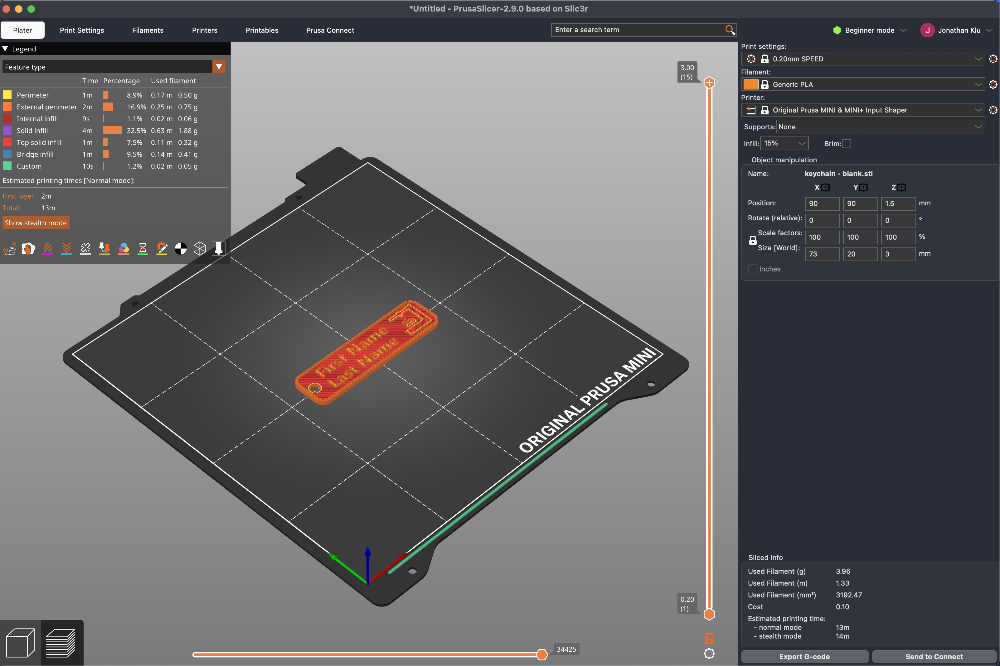
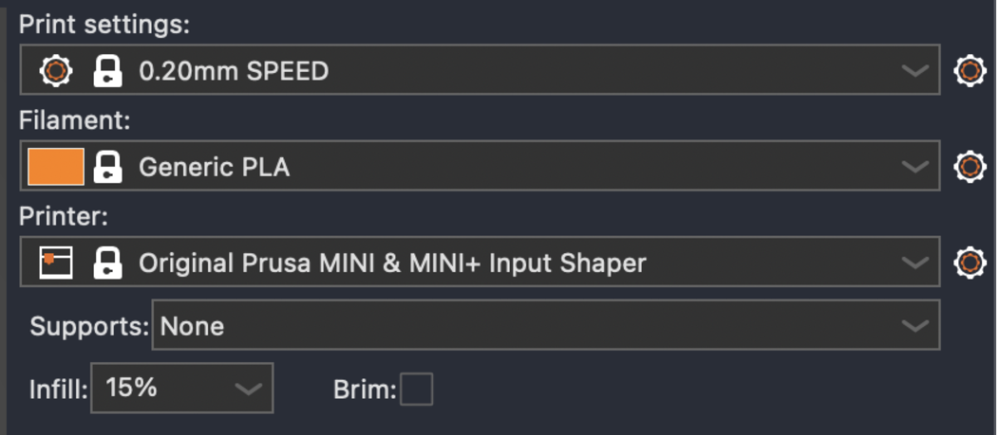
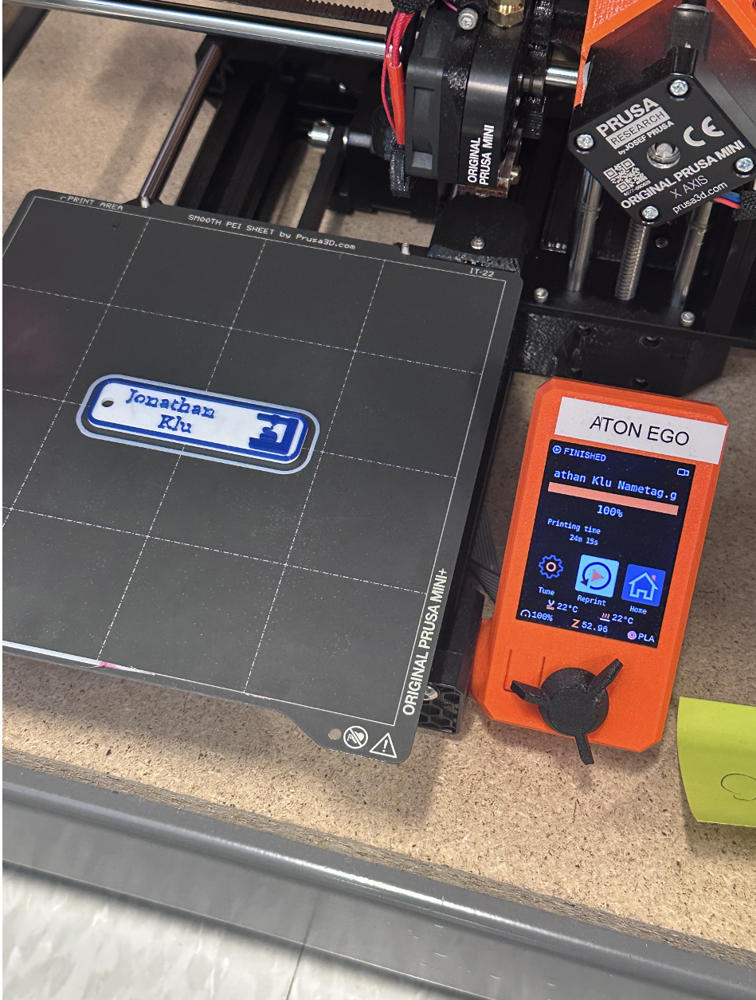
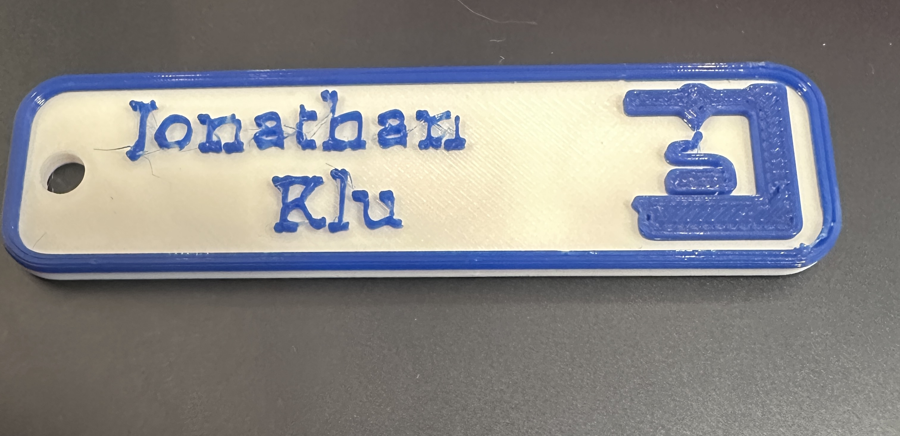

To begin the process of developing the 3D printed name tag I downloaded the software for the Prusa slicer and imported the 3MF file for the name tag. I found this initial step to be a bit tricky as the software was still new to me, so once I got the file into the software I spent some time initially working to figure out how to adjust the model itself.

I corrected the printing settings to make sure the speed was set to 0.20mm, the filament was set to generic PLA, and the printer itself set to Original Prusa MINI & MINI+ Input shaper. I learned that having the settings selected to the incorrect material can cause the nozzle on the 3D printer to jam.
After the setting corrections, I then sliced the 3D model which allowed me to modify the printing specifications even further. In example, the slider on the left side allowed me to adjust which layer of the print I am viewing from top to bottom.
Slicing/ printing

As for the slicing components, the nametag primarily consisted of 32.5 solid infill. This was followed by, 16.9% external perimeter, 9.5% bridge infill, 8.9% perimeter, 7.5% top solid infill, 1.2% custom, and 1.1% internal infill. The slider allows the user to visualize the specific amount of material that will be added, and at what time of the printing process it will appear.
I then began the process of completing the job number request form. This form is important especially for longer prints because the code given at the end of the form is the only way prints can be associated with individuals, especially if they are left overnight. In order to fill out the form I utilized the sliced info from the Prusa Slicer software. This information included the location, filament type(PLA), amount of filament: 3.96g, printer type: Prusa Mini+, and lastly the 3mf file for the print.
At this point I was ready to print my nametag, but before I did I used the Prusa Software once more to export the G-code onto the USB plug in. The USB essentially serves as the instructions for the printer to print your 3D model. I drug and dropped the file into the USB drive and then ejected it before taking out the USB.

